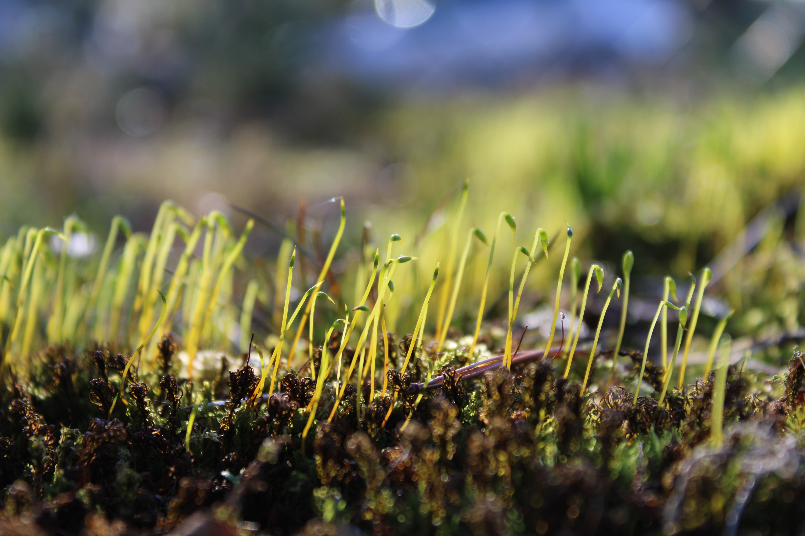

Посевной газон под ключ
Посевной газон под ключ – одно из основных направлений нашей деятельности. Профессиональный посев газона по приемлемым ценам. Используем спортивный газон, особенностью которого является устойчивость к высоким нагрузкам и долговечность. Уже более пяти лет радуем наших клиентов отличными посевными газонами под ключ с гарантией!
Этапы подготовки участка к посеву:
- Спил деревьев, корчевание корней, покос травы (при необходимости)
- Уборка мусора и сорняков
- Подготовка грунта, выравнивание участка и трамбовка
- Посев газона
Стоимость услуги составляет от 7000 т.р. за сотку. Цена работы зависит от состояния участка, удалённости и спектра работ, которые необходимо на нем произвести. Выполняем работы в городе Тула, Тульской области и других близлежащих городах. Цена за доставку обсуждается индивидуально. Работаем на участках от 5 соток.
При заказе газона под ключ от 10 соток в радиусе 50км - доставка за наш счет!
Предлагаем заказать устройство газона у нас по доступной цене. Примеры работ можете посмотреть в разделе «Наши работы», который еженедельно пополняется.
Чтобы узнать стоимость посева свяжитесь с нами с 8:00 до 22:00 по телефону, указанному в разделе «Контакты». Ждем Вашего звонка!
Этапы подготовки участка к посеву:
- Спил деревьев, корчевание корней, покос травы (при необходимости)
- Уборка мусора и сорняков
- Подготовка грунта, выравнивание участка и трамбовка
- Посев газона
Стоимость услуги составляет от 7000 т.р. за сотку. Цена работы зависит от состояния участка, удалённости и спектра работ, которые необходимо на нем произвести. Выполняем работы в городе Тула, Тульской области и других близлежащих городах. Цена за доставку обсуждается индивидуально. Работаем на участках от 5 соток.
При заказе газона под ключ от 10 соток в радиусе 50км - доставка за наш счет!
Предлагаем заказать устройство газона у нас по доступной цене. Примеры работ можете посмотреть в разделе «Наши работы», который еженедельно пополняется.
Чтобы узнать стоимость посева свяжитесь с нами с 8:00 до 22:00 по телефону, указанному в разделе «Контакты». Ждем Вашего звонка!
Продажа семян

Семена газонной травы, любого объема от 1 кг до нескольких тонн; от простой лужайки до профессионального газона. Семена подобраны с 5-и летним опытом. Наши семена 100% всходят и дают нужный результат. На все семена даем гарантию.
Состав:
20% - райграс пастбищный
25% - овсяница луговая
30% - тимофеевка луговая
15% - овсяница красная
10% - мятлик луговой
Соответствуют ГОСТ 52325-2005
Состав:
20% - райграс пастбищный
25% - овсяница луговая
30% - тимофеевка луговая
15% - овсяница красная
10% - мятлик луговой
Соответствуют ГОСТ 52325-2005
Вспашка целины, обработка участка почвофрезой
Вспашка целины, обработка участка почвофрезой - одна из самых популярных летних услуг. Вспашка участка позволяет подготовить землю к посадке сразу ряда однолетних и многолетних культур от кустарника до газона.
Стоимость услуги составляет от 2000 т.р за сотку в зависимости от удалённости и состояния участка. Конечная цена устанавливается индивидуально. Выполняем работы в Туле, Тульской области и других близлежащих городах.
Предлагаем заказать обработку участка у нас по доступной цене. Примеры работ можно посмотреть в разделе «Наши работы». Раздел еженедельно пополняется.
Чтобы узнать стоимость вспашки свяжитесь с нами с 8:00 до 22:00 по телефону, указанному в разделе «Контакты». Ждем Вашего звонка!
Стоимость услуги составляет от 2000 т.р за сотку в зависимости от удалённости и состояния участка. Конечная цена устанавливается индивидуально. Выполняем работы в Туле, Тульской области и других близлежащих городах.
Предлагаем заказать обработку участка у нас по доступной цене. Примеры работ можно посмотреть в разделе «Наши работы». Раздел еженедельно пополняется.
Чтобы узнать стоимость вспашки свяжитесь с нами с 8:00 до 22:00 по телефону, указанному в разделе «Контакты». Ждем Вашего звонка!
Выравнивание участка
Выравнивание участка. Ситуации, когда для строительства дома, облагораживания территории или посева газона нужна планировка, встречаются довольно часто. Участок можно выровнять даже, если он имеет значительный уклон или глубокие бугры и ямы. Но варианты планировки зависят от его состояния.
Варианты выравнивания участка:
1) Выравнивание по горизонту. Возможно только на участках с неровным рельефом с ямами и кочками или с небольшим уклоном. Осуществляется путём снятия грунта с возвышенностей и засыпки его в низины. Для участков с уклоном может потребоваться подсыпка привозным грунтом.
2) Выравнивание по склону. Выполняется аналогично, но грунт сглаживается не в горизонтальной плоскости, а в наклонной
Стоимость услуги составляет от 5000 т.р за сотку в зависимости от удалённости и состояния участка. Конечная цена устанавливается индивидуально. Выполняем работы в Туле, Тульской области и других близлежащих городах.
Предлагаем заказать выравние участка у нас по доступной цене. Примеры работ можно посмотреть в разделе «Наши работы». Раздел еженедельно пополняется.
Чтобы узнать стоимость выравнивания свяжитесь с нами с 8:00 до 22:00 по телефону, указанному в разделе «Контакты». Ждем Вашего звонка!
Варианты выравнивания участка:
1) Выравнивание по горизонту. Возможно только на участках с неровным рельефом с ямами и кочками или с небольшим уклоном. Осуществляется путём снятия грунта с возвышенностей и засыпки его в низины. Для участков с уклоном может потребоваться подсыпка привозным грунтом.
2) Выравнивание по склону. Выполняется аналогично, но грунт сглаживается не в горизонтальной плоскости, а в наклонной
Стоимость услуги составляет от 5000 т.р за сотку в зависимости от удалённости и состояния участка. Конечная цена устанавливается индивидуально. Выполняем работы в Туле, Тульской области и других близлежащих городах.
Предлагаем заказать выравние участка у нас по доступной цене. Примеры работ можно посмотреть в разделе «Наши работы». Раздел еженедельно пополняется.
Чтобы узнать стоимость выравнивания свяжитесь с нами с 8:00 до 22:00 по телефону, указанному в разделе «Контакты». Ждем Вашего звонка!